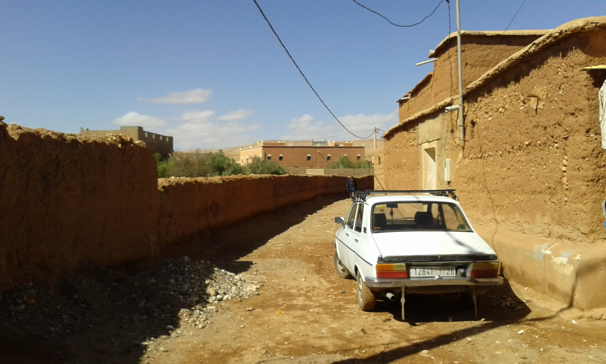

So there I am. Crossing the Mediterranean and making it to Africa for the first time in my life. I remember that holiday in Tarifa 5 years before, when I was looking across the strait telling myself one day I would have made it and finally I did it.
First thing that caught my attention was the countless number of children coming to me and asking for almost everything they could. Despite the hard life they face everyday, they have not lost the ability of smile and the curiosity towards the stranger and the unknown, and I think that is remarkable. One guy in particular was very much intended not to give up on me and at some point I agreed on letting him taking me around in exchange of a meal in a place of his choice. That was my first moroccan meal with a local and I have to say that despite the poverty of choice, I found moroccan cuisine very tasty.
In my perception I have mainly found Morocco divided by two parts: the spanish speaking one on the north and the french speaking one in the south, at least from the perspective of someone that does not speak arabic at all.
Tangeri was one of of the roughest but richest place I could visit there. I would put it in that category of those graceless, charming and loud port city that I visited before, together with Hamburg, Genova and probably few other I haven't visited yet like Marseille and Naples.
Switching from the chaos of Tangeri to the magical atmosphere of Chefchaouen was a very gentle way of going on, heading to the climax of my journey, the Sahara desert. I think when visiting a country for the first time, it is always important to set yourself a goal to reach, a main attraction that will answer your question 'why did I come here?'
Meeting Rebecca and her group of friends and sharing rooftop moroccan nights, bus rides, and the intense smelly big skins tanneries of Fez was a very rewarding experience, better than being alone on a 2nd class rusty local bus heading to Merzuga the day after. It was one of those lonely sleepless, uncomfortable nights and I have to thank the only friend who came with me during that journey, called Micah. The deep, emotional darkness of his debut album "Micah P.Hinson and the Gospel of Progress" was much appreciated back that night.
One night in the Sahara was all I could afford timewise. Lunar landscapes, a shaky tent that was about to be taken away from the wind, an almost-full moon that left me spechless, the company of a japanese almost non-english speaker dude and a bunch of Berbers was most of what I could remember except from my curiosity of knowing who owns West-Sahara and if there is a border between Morocco and Algeria somewhere in the middle of the desert.
Ouarzazate, photo-shooting in the moroccan Hollywood, huge empty movie set, Brian from Belgium, bus ride up the Atlas and down to Marrakesh, snow (yes, snow) and looking down to Jemaa-el-Fnaa.
**Micah P. Hinson and the Gospel of Progress// Lou Reed, Berlin**